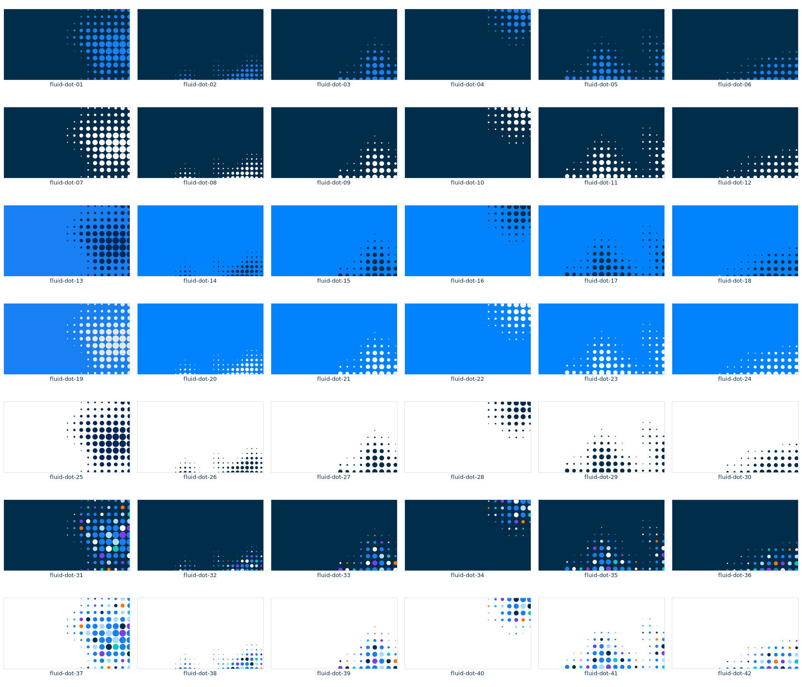

One of the two dot devices; see Big dot for when to use the pattern versus the big dot, and for the background → dot-color rules. The fluid dot pattern is a half-tone dot grid: identical dots on one grid that gather into a dense core at an edge or corner and dissolve fluidly outward, each dot easing from large to small so the field flows rather than stops. It means many separate points resolving into one connected, legible field. It never forms a recognizable object, symbol, letter, line, or shape.
The patterns are a closed, approved set of 42 masters in the Graphic Devices library: six layouts in seven color versions, as SVG and PNG. Pick the file that fits and use it as-is, flipped, or rotated 90°. Do not hand-place a new pattern or restyle one, no recoloring, resizing individual dots, gradients, opacity, strokes, or non-proportional stretching.
Each file is numbered as in the library (Fluid Dot-01 to -42). Rows are the color versions, columns the layouts.

| Files | Color version |
|---|---|
| 01–06 | Rhapsody Blue dots on navy |
| 07–12 | White dots on navy |
| 13–18 | Navy dots on Rhapsody Blue |
| 19–24 | White dots on Rhapsody Blue |
| 25–30 | Navy dots on white |
| 31–36 | Multicolor on navy (blue, light blue, teal, purple, white, a few orange) |
| 37–42 | Multicolor on white |
Layouts, the same in every color version (the position in each row of six): 1, core at the right edge; 2, a low, wide field along the bottom; 3, the bottom-right corner; 4, the top-right corner; 5, two peaks rising from the bottom; 6, a low strip in the bottom-right corner. Keep copy in the clear area opposite the dots, and use one pattern per layout.
Clearance is the rule most often broken. No copy, headline, button, card, or logo sits on top of the pattern, and nothing crops one. The one sanctioned pairing is a photo with the pattern behind it, as in Hero badge graphics. Keep copy in the clear area opposite the dense core, cover no more than 50 percent of the space, and use one dot device per layout, never two patterns, and never a pattern with the big dot or a light device.
Masters: the Graphic Devices library on SharePoint (Fluid Dot folder, SVG and PNG). PNGs also in assets/graphic-devices/fluid-dot/.